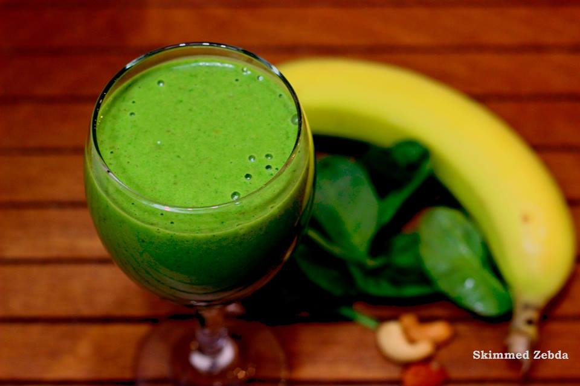

Pasta With Red Sauce

Rana Mahdy
Founder of Skimmed Zebda
Ingredients List:
- 8 ounces uncooked pasta
- 2 tablespoons butter
- 2-3 cloves garlic minced
- 2 tablespoons tomato paste
- 1 (14 fluid ounce) can tomato sauce
- 3/4 cup heavy/whipping cream
- 1/4 teaspoon Italian seasoning
- Salt & pepper to taste
- Freshly grated parmesan cheese for serving, to taste
Directions:
- Boil a large, salted pot of water for your pasta and cook it al dente according to package instructions.
- Meanwhile (once the pasta starts to cook), add the butter to a skillet over medium-high heat.
- Once it melts, add the garlic and sauté for about a minute, stirring constantly.
- Add in the tomato paste, tomato sauce, cream, and Italian seasoning. Stir until it's nice and smooth. Let the sauce cook for about 5 minutes or until it's thickened to your liking (it should be very gently bubbling, so you may need to turn down the heat).
- Season the sauce with salt & pepper as needed (I'm pretty generous with both). If the sauce is a little too acidic/tangy for your liking, add in a pinch of sugar.
-
Drain the pasta and toss with the sauce (add a splash of hot pasta water if the sauce gets too thick).
Serve immediately with plenty of parmesan cheese over top.